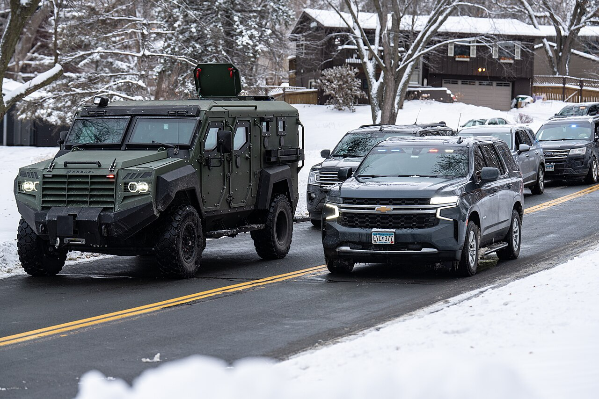

GRIEVANCE XVIII ◆ THE FRANCHISE
He has sent armed agents to the doors of residents to demand an account of their citizenship and their votes.
THE RECORD SHOWS
A CBS News investigation found armed DHS personnel conducting door-to-door checks about immigration status, voter registration, and voting history ahead of the midterms.

DHS says its operations seek unlawful noncitizen voting; critics describe them as intimidating and an extraordinary intrusion into state election administration. The investigations span multiple states. The mere presence of an agent at a door is not proof that an eligible voter was prevented from voting.
A DOCUMENTED SEQUENCE
3 MILESTONES- October 2026CBS reported armed Homeland Security investigators visiting residences in several states to ask about citizenship and prior voting.
- October 21, 2026A federal judge issued a preliminary injunction limiting DHS field investigations of people identified as potential noncitizen voters in nine states through Election Day.
- October 22, 2026Reporting explained that the interim order extends through the scheduled November 3 midterm elections; longer-running litigation remains open.
READ THE SOURCES
5 LINKS- Federal agents knock on doors to track down possible noncitizen voters ahead of midterms
- How ICE Is Targeting the 2026 Midterms
- Wisconsin elections officials issue guidance for handling federal agents at polls
- DHS’s voter fraud operation barred in nine states through Nov. 3
- Judge curbs Trump administration’s hunt for noncitizen voters in some states, citing flawed data